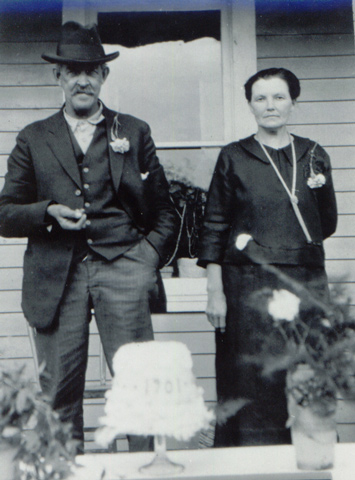

| Carl Oscar Wogsland, the sixth child of to Gunhild and Ole Wogsland, was born in April of 1870 on the Wogsland farm near Iola, WI. He married Norwegian immigrant Anne Amundson and together they had four boys. Carl died in 1946 in New Hope Town, WI. |

cake says 1901, probably the year they were married. |